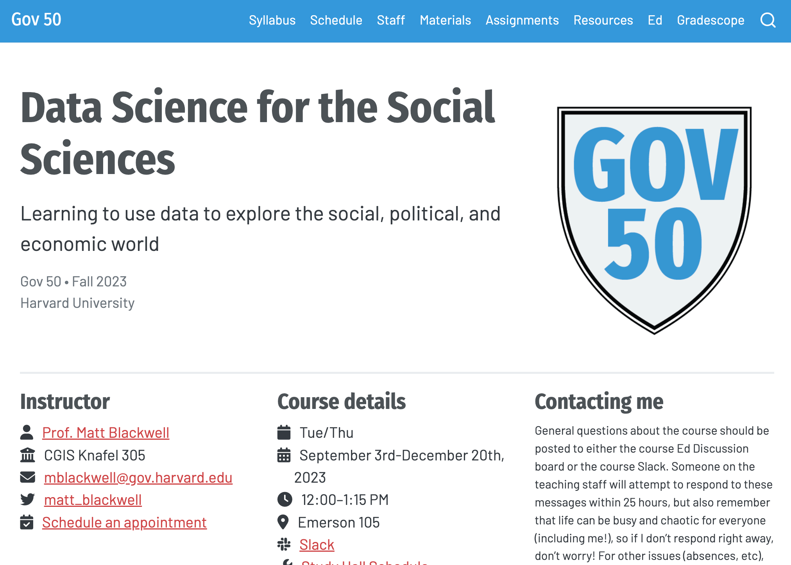
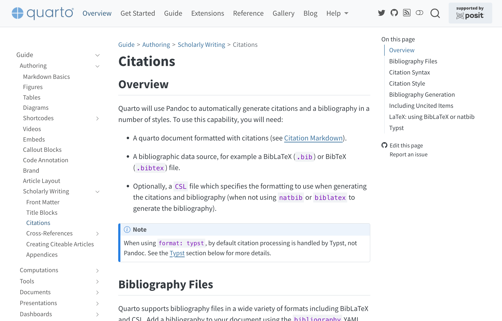

04:00
Intro to
Quarto
Welcome!
Housekeeping!
Be kind and curious!
Slack and Zoom chat
Ask questions
Schedule (Day 1)
| Time | Activity |
|---|---|
| 10:30–11:30 | Welcome + Intro to Quarto |
| 11:30–12:30 | Creating basic websites |
| 12:30–13:30 | Break |
| 13:00–15:00 | Advanced website features |
Schedule (Day 2)
| Time | Activity |
|---|---|
| 10:30–11:00 | Publishing |
| 11:00–12:30 | Customization and branding |
| 12:30–13:30 | Break |
| 13:00–15:00 | Interactivity |
About me
Andrew Heiss
Assistant professor of public policy, Georgia State University
Data visualization, statistics, and causal inference
Meeting you where you are
This course is designed for someone who:
Knows some R or Python
Maybe has an idea for a website
Is relatively new to Quarto
Wants to customize Quarto output
You’ll learn:
What Quarto is and how to use it
How to create and publish websites with Quarto
How to customize Quarto output
Course structure
My turn
- Lecture segments
- Feel free to just watch, take notes, browse docs, or tinker around with the code
Your turn
- Exercises for you to do
- Work on your own or with others
Getting help
Use Zoom reactions
=
“I’m stuck and need help!”=
“I finished the exercise”
Ask longer, more detailed questions in Slack
Your turn
Introduce yourself:
- Name
- Professional affiliation
- On a scale of 1–10, how well do you know…
- Quarto?
- R?
- Python?
- HTML and CSS?
- What do you hope to get out of this course?
Introduction
to Quarto
Quarto is an…
open-source
scientific and technical
publishing system
built on Pandoc.
With Quarto…
…you can weave together narrative and code to produce elegantly formatted output such as documents, web pages, blog posts, books, dashboards, and more.
- Create dynamic content with Python, R, Julia, and Observable
- Edit documents in your favorite editor
- Publish technical content in HTML, PDF, Microsoft Word, and more
- Share content by publishing to the internet
Display data and results
2024 Idaho election results, by Gabe Osterhout and Andrew Heiss
Walk through a story
Council Housing & Neighborhood Income Inequality in Vienna by Tamara Premrov and Matthias Schnetzer (European Centre for Social Welfare Policy and Research, Austria)
Publish papers
Navigating Hostility: The Effect of Nonprofit Transparency and Accountability on Donor Preferences in the Face of Shrinking Civic Space by Suparna Chaudhry, Marc Dotson, and Andrew Heiss
Share research
Pandemic Pass? Treaty Derogations and Human Rights Practices During COVID-19 by Suparna Chaudhry, Audrey Comstock, and Andrew Heiss
Teach classes
Data Science for the Social Sciences, Gov 50, Harvard University, taught by Matt Blackwell
Automate and reproduce your output
Duplicating Quarto elements with code templates to reduce copy and paste errors by Althea A. Archer (United States Geological Survey)
Get your team on the same page
We Converted Our Documentation to Quarto by Melissa Van Bussel (Statistics Canada)
- Website for R/Python User Group
- Training resources
- Presentations
Gapminder Report
This is what you’ll work on today!
“Literate programming”
Why Quarto?
- Multilingual and independent of computational systems
- Quarto comes “batteries included” straight out of the box
- Consistent expression for core features
- Extension system
- Enable “single-source publishing”—create Word, PDFs, HTML, etc. from one source
- Use defaults that meet accessibility guidelines
Quarto formats
| Feature | Quarto |
|---|---|
| Basic formats | html, pdf, docx, typst |
| Beamer | beamer |
| PowerPoint | pptx |
| HTML slides | revealjs |
| Advanced layout | Quarto Article Layout |
| Cross references | Quarto Crossrefs |
| Websites & blogs | Quarto Websites, Quarto Blogs |
| Books | Quarto Books |
| Interactivity | Quarto Interactive Documents |
| Journal articles | Journal Articles |
| Dashboards | Quarto Dashboards |
How it works
Quarto is a command line interface (CLI) that renders plain text formats (.qmd, .rmd, .md) OR mixed formats (.ipynb/Jupyter notebook) into static PDF/Word/HTML reports, books, websites, presentations and more.
Usage: quarto
Version: 1.8.24
Description:
Quarto CLI
Options:
-h, --help - Show this help.
-V, --version - Show the version number for this program.
Commands:
render [input] [args...] - Render files or projects to various document types.
preview [file] [args...] - Render and preview a document or website project.
serve [input] - Serve a Shiny interactive document.
create [type] [commands...] - Create a Quarto project or extension
create-project [dir] - Create a project for rendering multiple documents
convert <input> - Convert documents to alternate representations.
pandoc [args...] - Run the version of Pandoc embedded within Quarto.
typst [args...] - Run the version of Typst embedded within Quarto.
run [script] [args...] - Run a TypeScript, R, Python, or Lua script.
add <extension> - Add an extension to this folder or project
install [target...] - Installs an extension or global dependency.
publish [provider] [path] - Publish a document or project to a provider.
check [target] - Verify correct functioning of Quarto installation.
help [command] - Show this help or the help of a sub-command.Under the hood
jupyterorknitrevaluates Python, Julia, R, or Observable code and returns a.mdfile along with the evaluated code- Quarto applies Lua filters + CSS/LaTeX which is then evaluated alongside the
.mdfile by Pandoc and converted to a final output format
Illustration by Allison Horst
Environment options
You have a couple options for following along today:
- Posit Cloud (RStudio in the cloud)
- Local installation (RStudio, Positron, or VS Code on your computer)
Your turn
Go to the course website and click on Setup in the sidebar.
Follow the instructions for either Option 1 or Option 2.
05:00
Quarto workflow
- Open a
.qmdfile. - Preview/render the document.
- Make a change and preview/render again.
Render/preview
⌘⇧K
Ctrl + Shift + K
⌘⇧K
Ctrl + Shift + K
Requires Quarto Extension for VS Code
Your turn
- Open
01-exercise.qmd - Preview/render the document
- If you’re using Posit Cloud, you might be asked to allow pop-ups
- Edit the title and preview the document again.
05:00
Quarto documents
Anatomy of a Quarto document
.qmd file format with three components:
YAML: Metadata
Text: Markdown
Code: R, Python, Observable, and Julia
Weave it all together, and you have beautiful, powerful, and useful outputs!
Anatomy of a Quarto document
Metadata: YAML
Anatomy of a Quarto document
Text: Markdown
my-document.qmd
- Markdown is a lightweight language for creating formatted text
- Quarto is based on Pandoc and uses its variation of markdown as its underlying document syntax
Anatomy of a Quarto document
Text: Markdown
my-document.qmd
↓
The
gapminder.csvdataset contains data from the Gapminder foundation.
Anatomy of a Quarto document
Text: Markdown
| Markdown syntax | Output |
|---|---|
|
italics and bold |
|
superscript2 / subscript2 |
|
|
|
verbatim code |
Anatomy of a Quarto document
Code
my-document.qmd
---
title: "My Cool Document"
format: html
---
The `gapminder.csv` dataset contains data from the [**Gapminder foundation**](https://www.gapminder.org/).
```{r}
library(tidyverse)
df <- read_csv("data/gapminder.csv")
ggplot(df, aes(x = gdpPercap, y = lifeExp)) +
geom_point(aes(size = pop, color = continent)) +
scale_x_log10()
```Anatomy of a Quarto document
Code
my-document.qmd
---
title: "My Cool Document"
format: html
---
The `gapminder.csv` dataset contains data from the [**Gapminder foundation**](https://www.gapminder.org/).
```{r}
library(tidyverse)
df <- read_csv("data/gapminder.csv")
ggplot(df, aes(x = gdpPercap, y = lifeExp)) +
geom_point(aes(size = pop, color = continent)) +
scale_x_log10()
```- Code chunks begin and end with three backticks
- Code chunks are identified with a programming language in between
{}
Anatomy of a Quarto document
Inline code executes code within Markdown
↓
There are 147 countries in the dataset.
Anatomy of a Quarto document
Code can include optional chunk options, in YAML style, identified by #| at the beginning of the line
my-document.qmd
The `gapminder.csv` dataset contains data from the [**Gapminder foundation**](https://www.gapminder.org/).
```{r}
#| label: fig-neat-plot
#| echo: false
#| fig-width: 6
#| fig-height: 3.8
#| fig-cap: "My neat plot"
library(tidyverse)
df <- read_csv("data/gapminder.csv")
ggplot(df, aes(x = gdpPercap, y = lifeExp)) +
geom_point(aes(size = pop, color = continent)) +
scale_x_log10()
```Anatomy of a Quarto document
Code can include optional chunk options, in YAML style, identified by #| at the beginning of the line
| Option | Description |
|---|---|
eval |
Evaluate the code chunk |
echo |
Include the source code |
warning |
Include warnings |
include |
Include code and results |
Your turn
- Open
01-exercise.qmdand run some of the code chunks (in order!). - Add
#| include: falseto the second chunk and preview again. Switch it back totrueor remove it. Preview again. - In the YAML area, add an
authorfield and add your name. Preview again. - Change
code-foldto be true. Preview again. - Edit the first paragraph to:
- Make something bold
- Make “the Gapminder foundation” link to
https://www.gapminder.org - Replace
XXXXandYYYYwith inline code instead of hardcoded values. The first code chunk creates R objects namedfirst_yearandlast_year—use those.
05:00
Authoring Quarto
Images and links
| Markdown syntax | Output |
|---|---|
|
https://quarto.org |
|
Quarto |
|
Tables
↓
| Right | Left | Default | Center |
|---|---|---|---|
| 12 | 12 | 12 | 12 |
| 123 | 123 | 123 | 123 |
| 1 | 1 | 1 | 1 |
Tables
↓
| Right | Left | Default | Center |
|---|---|---|---|
| 12 | 12 | 12 | 12 |
| 123 | 123 | 123 | 123 |
| 1 | 1 | 1 | 1 |
Citations
my-document.qmd
↓
Computers are neat (Lovelace 1842).
References
Lovelace, Ada Augusta. 1842. “Sketch of the Analytical Engine Invented by Charles Babbage, by LF Menabrea, Officer of the Military Engineers, with Notes Upon the Memoir by the Translator.” Taylor’s Scientific Memoirs 3: 666–731.
Citations
my-document.qmd
↓
Computers are neat (Lovelace, 1842).
References
Lovelace, A. A. (1842). Sketch of the analytical engine invented by Charles Babbage, by LF Menabrea, officer of the military engineers, with notes upon the memoir by the translator. Taylor’s Scientific Memoirs, 3, 666–731.
Citations
my-document.qmd
↓
Computers are neat1.
Footnotes
- Ada Augusta Lovelace, “Sketch of the Analytical Engine Invented by Charles Babbage, by LF Menabrea, Officer of the Military Engineers, with Notes Upon the Memoir by the Translator,” Taylor’s Scientific Memoirs 3 (1842): 666–731.↩︎
Citations
Zotero + Better BibTeX can manage references and export them for Quarto

10,000 bibliographic styles are available at https://www.zotero.org/styles
Don’t memorize this stuff!
Cross references
my-document.qmd
↓
See Figure 1 for more details.
…
Figure 1: My neat plot
Don’t memorize this stuff!
Divs and Spans
For further customization, you can add classes, attributes, and other identifiers to content using divs and spans.
Divs
Spans
Divs
Callout blocks
my-document.qmd
Tip
Note that there are five types of callouts, including: note, tip, warning, caution, and important.
Divs
Multiple columns
my-document.qmd
Photo by The New York Public Library on Unsplash
Divs
Tabsets
Spans
This is text that is red.
Changing formats
Changing formats
Don’t memorize this stuff!
Your turn
- Add an
importantcallout box to the introduction summarizing the report’s findings. Preview the file. - Change the caption for the first plot. Preview again.
- Change some text color to
#ec008b. Preview again. - Edit the “Average life expectancy increased…” paragraph to say “According to Figure 1, average life expectancy increased…”, BUT do it without typing “Figure 1”. Preview again.
- In the first paragraph, add a citation to something in
bib/references.bib. Preview again. - Change the bibliography style to APA. Preview again.
05:00
What’s next?
Course outline
- ✅
Intro to Quarto - Creating basic websites
- Advanced website features
- Publishing
- Customization and branding
- Interactivity